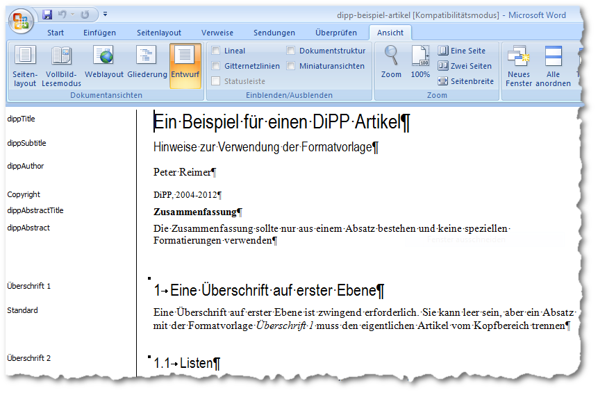
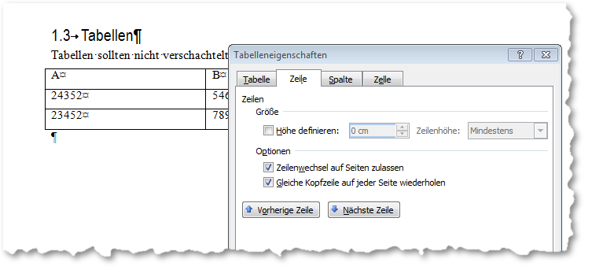

Artikel formatieren¶
Grundlage für eine erfolgreiche Artikelkonvertierung ist die korrekte Verwendung
der Formatvorlage.
Wichtig sind vor allem die Formate für den Kopf des Artikels,
der die Metadaten enthält. Anhand der Namen der Absatzformate identifiziert die
Konvertierungsoftware den Titel, die Autoren, den Abstract, etc. Danach wird eine
Überschrift erster Ordung benötigt, um den eigentliche Artikeltext von den Metadaten
zu trennen.
Achtung
Ein Absatz mit dem Absatzformat „Überschrift 1“ ist zwingend vorgeschrieben. Er kann leer sein, muss aber existieren, da der Konverter ansonsten nicht erkennt, wo der eigentliche Artikel beginnt.

Ein Artikel mit angewandter Formatvorlage. Entwurfsansicht mit eingeblendeten Absatzformaten¶
Die Standardformatvorlage enthält eine Reihe von Absatzformaten, die im Artikelkopf angewendet werden können, bzw. müssen. Die bezeichnung und die Reihenfolge ist wichtig, kann jedoch an die jeweiligen Bedürfnisse angepasst werden. Dafür ist jedoch auch eine Anpassungen der journalspezifischen XSL und XSLT Datei für die Konvertierungssoftware notwendig.
Name der Vorlage |
Bedeutung |
|---|---|
dippTitle |
Titel der Artikels, erforderlich. |
dippSubtitle |
evtl. Untertitel |
dippAuthor |
ein oder mehrere Autoren |
Copyright |
enthält nach der Konvertierun die URN |
dippAbstractTitle |
Überschrift für den Abstract, kann nur einmal vorkommen |
dippAbstract |
der Abstract selber |
Im Fließtext des Artikel sind die Einschränkungen nicht so restriktiv, es können auch eigene Formate ergänzt werden, allerdings werden die in Word gemachten Formatierung wie z.B. Einrückungen, Schriftgrad oder Farbe nicht automatisch in die HTML Ausgabe übernommen. Diese müssen manuell in den CSS Dateien nachgezogen werden. Da der Name des Absatzformates zum Klassennamen in der CSS Datei wird, darf er keine Sonderzeichen oder Leerzeichen enthalten.
In der Regel sollten die Funktionen der Textverarbeitung genutzt werden:
Normale Absätze werden mit der Formatvorlage „Standard“ formatiert.
Für Überschriften werden die üblichen „Überschrift 1, Überschrift 2, …“ verwendet. Aus den Überschriften wird dann das Inhaltsverzeichnis generiert, das als toc_html parallel zum Hauptext (fulltext) abeglegt wird. Über ein entsprechendes Portlet es in einer Randspalte angezeigt werden, siehe Inhaltsverzeichnis portlet_toc.
Fußnoten sollten mit der Fußnotenfunktionen von Word gemacht werden. Zwischen Fuß- und Endnoten kann wegen fehlender Pagnierung in HTML nicht unterschieden werden.
Hyperlinks sollten bereits in Word als solche angelegt werden.
Aufzählungen und Nummerierungen sollten mit der entsprechenden Funktion in Word angelegt werden.
Beschriftungen von Tabellen und Abbildungen sind ebenfalls mit der entsprechenden Funktion von Word zu erstellen.
Abbildungen¶
Es sind nur pixelbasierte Dateiformat (jpeg, gif, png) möglich, vektorbasierte Formate wie z.B. wmf oder mit Wordart erstellte Graphiken werden nicht unterstützt.
Bilder sind in der Auflösung einzubinden, in der sie später im Internet erscheinen sollen. Abhängig vom Layout der Webseite sollte die Breite 580px nicht überschreiten. Die Bilder können mit Verweisen (hyperlinks) zu höherauflösenden Versionen versehen werden, die im Publikationssystem nachträglich hochgeladen werden können, siehe Zusatzmaterial.
Tabellen¶
Tabellen sollten nicht zu komplex gestaltet werden, d. h. sie sollten nicht verschachtelt werden und die Größe einzelner Zellen sollten nicht durch Ziehen der Begrenzungslinie verändert werden. Das Verschmelzen von zwei benachbarten Zellen ist jedoch möglich. Auch sollte Für die erste Tabellenzeile als Kopfzeile gesetzt werden. Dazu wird die Zeile in Word markiert und dann über das Kontektmenü „Tabelleneigenschaft“, Reiter „Zeile“ die Option „Gleiche Kopfzeile auf jeder Seite wiederholen“ aktiviert. Dadurch wird die Zeile im HTML als header ausgezeichnet und läßt sich entsprechend über CSS formatieren.

Setzen der Eigenschaften für die Kopfzeile der Tabelle¶